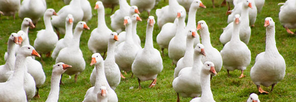
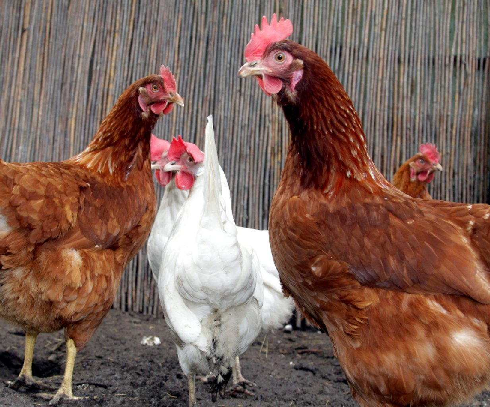
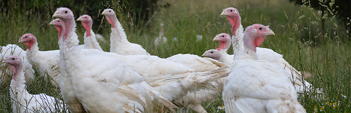
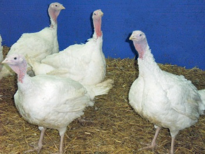
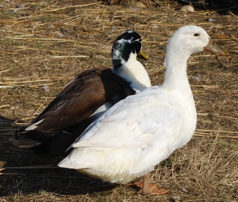
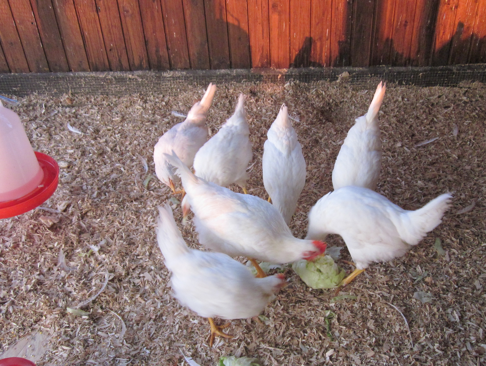
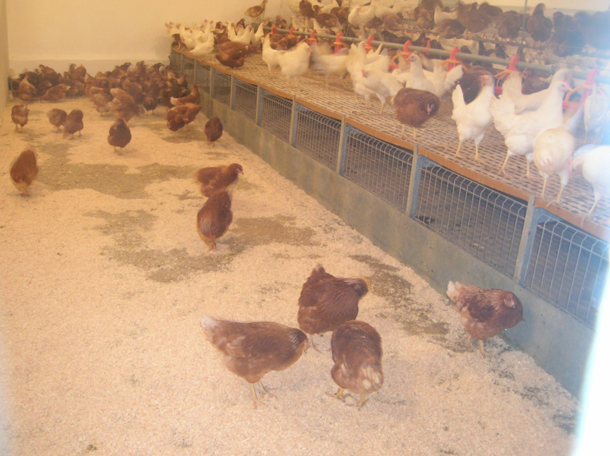

Unser Geflügel
Unsere Legehennen, Hähnchen, Puten und Enten befinden sich in einem geschlossenen Stall. Dort sind sie geschützt vor Witterungseinflüssen, Raubtieren und Ungeziefer. Unser Geflügel hat genügend Platz, um seinen natürlichen Bedürfnissen nachzukommen. Regelmäßig werden die Ställe gereinigt und die Einstreu (Stroh) erneuert.
Unsere Freilandgänse bekommen tagsüber auf ihrem ca. 1ha großen Auslauf Gras, Mais, Weizen und Gerste zum freiwilligen Verzehr angeboten. Am Abend gehen sie selbstständig in den Stall zurück.
Vorbestellung
Suppenhühner und Brathähnchen gibt es ganzjährig, möglichst auf Vorbestellung. Enten, Gänse und Puten ab Ende Oktober jede Woche auf Vorbestellung erhältlich.
Zum Weihnachtsfest frischgeschlachtete Gänse, Enten oder Babyputen bitte rechtzeitig vorbestellen.
Unser Geflügel in Bildern






